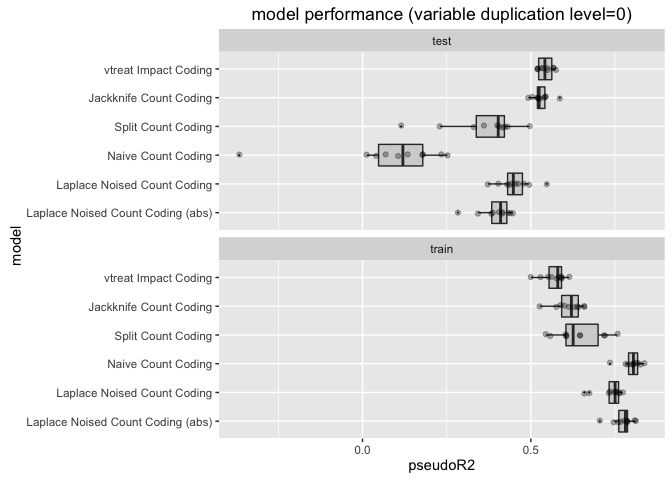
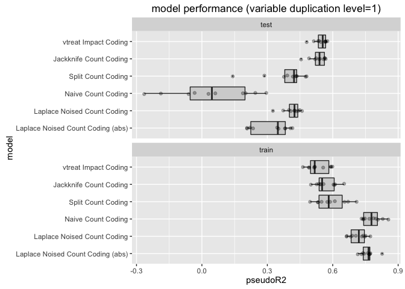
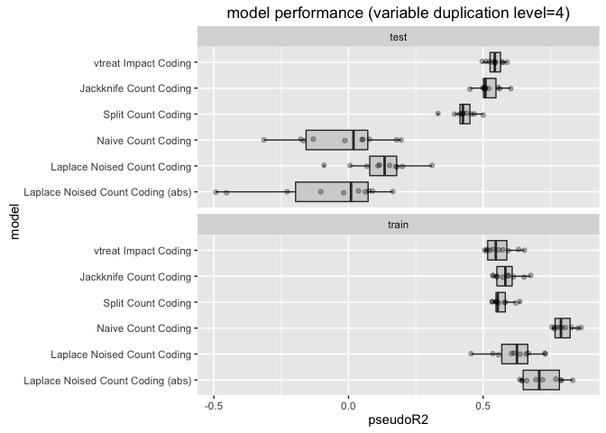

library('ggplot2')
fitRes <- readRDS(file='fitRes.RDS')
d <- fitRes[fitRes$model!='Native Indicators',,drop=FALSE ]
d$model <- factor(d$model,levels = rev(c(
"vtreat Impact Coding",
"Jackknife Count Coding",
"Split Count Coding",
"Naive Count Coding",
"Laplace Noised Count Coding",
"Laplace Noised Count Coding (abs)")))
for(ndup in sort(unique(d$ndup))) {
print(WVPlots::ScatterBoxPlotH(d[d$ndup==ndup,,drop=FALSE],'pseudoR2','model',
paste0('model performance (variable duplication level=',ndup,')')) +
facet_wrap(~data,ncol=1))
}